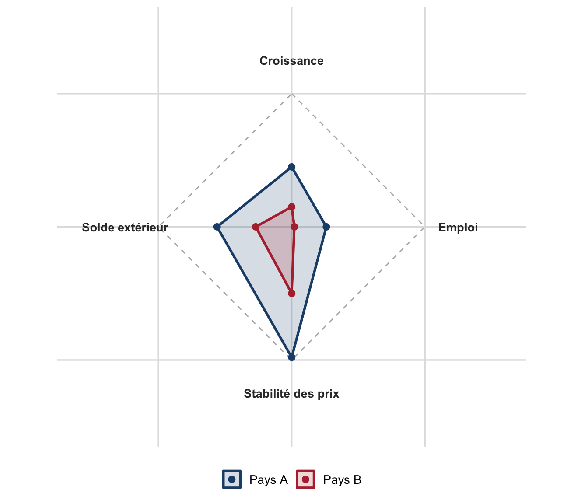

TD 1 : Fondements de la politique économique
Objectifs, instruments, règle de Tinbergen, carré de Kaldor et fonctions de Musgrave
Dossier de TD n°1 : QCM de définitions, lecture d’un article de presse, exercice analytique sur la règle de Tinbergen et le carré magique de Kaldor (graphique R), question de réflexion sur les fonctions de la politique économique.
Objectifs de la séance
- Distinguer la politique économique de l’économie politique, et l’approche normative de l’approche positive.
- Appliquer la règle de Tinbergen à un problème concret d’objectifs et d’instruments (policy-mix).
- Construire et interpréter un carré magique de Kaldor à partir de données chiffrées.
- Mobiliser les trois fonctions de Musgrave (stabilisation, allocation, redistribution) pour analyser une politique économique réelle.
- Distinguer, en première approche, politiques actives et politiques passives (notion approfondie au chapitre III).
Pré-requis : avoir lu le résumé de cours du chapitre I, en particulier les sections 4 (« Vue d’ensemble de la politique économique ») et 5 (« Les trois fonctions de la politique économique »). Gardez ce résumé sous la main : la plupart des exercices y renvoient directement.
Exercice 1 : QCM : les notions de base
Pour chaque question, une seule réponse est correcte. Justifiez votre choix en une phrase : la justification compte autant que la bonne réponse.
Question 1. Quelle est la principale différence entre la microéconomie et la macroéconomie ?
- La microéconomie étudie les agrégats économiques, la macroéconomie le comportement individuel.
- La microéconomie étudie des marchés spécifiques, la macroéconomie analyse l’économie dans son ensemble.
- La microéconomie se limite aux politiques gouvernementales, la macroéconomie aux politiques monétaires.
- La microéconomie concerne les économies nationales, la macroéconomie les économies internationales.
Question 2. La politique économique se définit comme :
- La production de biens et de services par le secteur public.
- L’ensemble des interventions des pouvoirs publics visant à atteindre des objectifs macroéconomiques.
- L’étude théorique du comportement des agents privés.
- La gestion du budget d’un ménage.
Question 3. Quelle est la règle de Tinbergen ?
- Plus la surface du carré magique est grande, mieux se porte l’économie.
- Tout déséquilibre macroéconomique est temporaire.
- Il faut autant d’instruments indépendants que d’objectifs de politique économique.
- Les politiques de demande créent surtout de l’inflation.
Question 4. Dans le carré magique de Kaldor, les axes du chômage et de l’inflation sont conventionnellement représentés :
- En valeur absolue, comme les deux autres axes.
- En écart-type par rapport à la moyenne des pays de l’OCDE.
- En échelle inversée, afin que « s’éloigner du centre » signifie toujours une amélioration.
- Ils ne figurent pas dans le carré magique.
Question 5. Quels sont les objectifs d’une politique macroéconomique contracyclique ?
- Stimuler l’économie en récession et la freiner en période de croissance forte.
- Réduire le chômage en récession et accroître l’inflation en période de croissance.
- Réduire l’inflation en récession et stimuler la croissance en période de croissance.
- Augmenter les impôts en récession et les dépenses publiques en période de croissance.
Question 6. Laquelle de ces propositions n’est pas une fonction de Musgrave ?
- La stabilisation.
- L’allocation.
- La croissance potentielle.
- La redistribution.
Question 7. Dans le modèle offre agrégée-demande agrégée (OA-DA), à court terme, la courbe d’offre agrégée est croissante parce que :
- Une hausse des prix réduit le salaire réel et incite les entreprises à produire davantage.
- Les prix n’ont aucun effet sur la production.
- Les salaires sont totalement flexibles et s’ajustent immédiatement.
- La demande détermine toujours l’offre.
Question 8. Une politique budgétaire restrictive combinée à une politique monétaire expansionniste, mises en œuvre simultanément pour atteindre deux objectifs distincts, illustre :
- Une violation de la règle de Tinbergen.
- Un exemple de policy-mix.
- Une politique purement structurelle.
- La fonction de redistribution de Musgrave.
Exercice 2 : Lecture de document : un policy-mix en pratique
NoteDocument : Koichi Hamada, « Pourquoi une récession mondiale est peu probable », Project Syndicate, 6 septembre 2023 (Hamada 2023)
(extrait, traduit et abrégé)
« Un ralentissement économique peut avoir de nombreuses causes. Par exemple, une confiance excessive des consommateurs et des investisseurs ou des niveaux très élevés de dépenses publiques peuvent faire grimper la demande globale au point que l’inflation commence à augmenter, obligeant les décideurs politiques, en particulier les banques centrales, à intervenir pour calmer une économie en surchauffe. […]
Cette baisse de la production [liée à la pandémie de COVID-19] a déclenché de puissantes réponses politiques. Aux États-Unis, par exemple, l’administration du président Donald Trump a lancé un plan de relance massif, renforcé par son successeur, Joe Biden, pour stimuler la demande, c’est-à-dire déplacer la courbe de demande vers la droite. […]
Même si le resserrement monétaire de la [Réserve fédérale] augmente le risque d’un ralentissement de la croissance, voire d’une récession, aux États-Unis, les récents indicateurs économiques, notamment les bons chiffres de l’emploi, suggèrent qu’un atterrissage en douceur est parfaitement réalisable. En fait, tant les politiques de stimulation de la demande de l’administration Biden que les interventions de la [Réserve fédérale] pour freiner l’inflation étaient tout à fait appropriées. »
Source complète : project-syndicate.org
Questions
- Quel type de politique le président américain a-t-il mis en place et quel en a été le résultat ?
- Quel type de politique la Réserve fédérale (Fed) a-t-elle mis en place, et pourquoi ?
- À quelle(s) grande(s) fonction(s) de la politique économique (au sens de Musgrave) répondent ces deux interventions ?
- Ces deux interventions combinent un instrument budgétaire et un instrument monétaire pour deux objectifs distincts. En quoi cet épisode illustre-t-il (ou non) la règle de Tinbergen ?
Exercice 3 : Exercice analytique : Tinbergen et carré de Kaldor
3.1 Combien d’instruments pour combien d’objectifs ?
Un gouvernement fixe quatre objectifs pour l’année à venir :
- une croissance du PIB réel d’au moins 2 % ;
- un taux de chômage inférieur à 7 % ;
- une inflation contenue autour de 2 % ;
- un solde extérieur proche de l’équilibre.
Il ne dispose que de deux instruments : le taux directeur de la banque centrale et le solde budgétaire de l’État.
- D’après la règle de Tinbergen, de combien d’instruments indépendants ce gouvernement aurait-il besoin pour atteindre simultanément ses quatre objectifs ?
- Concrètement, que doit faire le gouvernement puisqu’il ne dispose que de deux instruments pour quatre objectifs ? Proposez un exemple chiffré de policy-mix permettant d’agir sur deux des quatre objectifs (précisez le sens, expansionniste ou restrictif, de chaque instrument).
- Sur quels objectifs le gouvernement devra-t-il alors arbitrer, faute d’instrument dédié ? Citez un instrument supplémentaire (autre que budgétaire ou monétaire) qui permettrait de se rapprocher de la règle de Tinbergen.
3.2 Construire un carré magique de Kaldor
Le tableau ci-dessous donne des valeurs indicatives (à visée pédagogique, non des statistiques officielles) pour deux économies fictives sur une même année.
| Pays | Croissance du PIB réel | Taux de chômage | Taux d’inflation | Solde courant (% du PIB) |
|---|---|---|---|---|
| Pays A | 1,8 % | 7,4 % | 2,1 % | +0,6 % |
| Pays B | 0,6 % | 9,8 % | 4,5 % | −2,3 % |
Pour rendre les quatre axes comparables sur une même échelle de 0 (mauvais résultat) à 10 (excellent résultat), on utilise les règles de conversion suivantes :
\[ \text{score}_{\text{croissance}} = \dfrac{\text{croissance}}{4}\times 10 \qquad \text{score}_{\text{emploi}} = 10 - \text{chômage} \] \[ \text{score}_{\text{stabilité des prix}} = 10 - 2\,|\text{inflation} - 2| \qquad \text{score}_{\text{solde extérieur}} = 5 + \text{solde courant} \]
(chaque score est ensuite borné entre 0 et 10).
- Calculez à la main le score de croissance et le score d’emploi du Pays A. Vérifiez votre résultat avec la figure ci-dessous.
- La figure suivante représente le carré magique des deux pays à partir de ces scores.
- Lequel des deux pays présente la situation macroéconomique la plus favorable au sens du carré magique ? Sur quel(s) axe(s) chaque pays est-il en difficulté ?
- Pourquoi est-il peu probable qu’un pays atteigne un score proche de 10 sur les quatre axes simultanément ? Citez les deux relations empiriques évoquées en cours qui rendent ces arbitrages explicites.
- Quel cinquième objectif, apparu dans le débat public depuis les années 1990, est absent de ce carré à quatre axes ?
Exercice 4 : Question de réflexion (dissertation courte)
Politiques actives vs. politiques passives (aperçu, cette distinction sera approfondie au chapitre III)
- Politiques actives de l’emploi : cherchent à obtenir une croissance plus riche en emplois : inciter les entreprises à embaucher, créer des emplois publics, améliorer la rencontre entre offre et demande de travail, développer la formation professionnelle.
- Politiques passives de l’emploi : cherchent à rendre le chômage plus supportable et à réduire la population active : indemnisation des chômeurs, incitations au retrait d’activité, abaissement de l’âge de la retraite, partage du travail.
En vous appuyant sur le document de l’exercice 2 et sur les notions vues en cours, rédigez une réponse structurée (250 à 300 mots, avec une introduction, deux ou trois arguments et une brève conclusion) à la question suivante :
« Dans quelle mesure une politique de stabilisation conjoncturelle peut-elle suffire à répondre à un ralentissement économique durable ? »
Votre réponse devra mobiliser explicitement : (i) la distinction entre stabilisation et allocation (Musgrave), (ii) la différence entre politiques actives et politiques passives, et (iii) la contrainte posée par la règle de Tinbergen sur le nombre d’instruments disponibles.
AvertissementErreur fréquente
Ne confondez pas politique conjoncturelle (agit sur la demande à court terme, vise à combler un output gap) et politique structurelle (agit sur l’offre à long terme, vise à déplacer le niveau de production potentielle). Une relance budgétaire massive ne « corrige » pas un problème structurel (ex. : qualification insuffisante de la main-d’œuvre) : elle ne fait, au mieux, que ramener la production vers un potentiel inchangé.
Pour aller plus loin
AstuceVidéos et ressources complémentaires
- « Qu’est-ce que le Produit Intérieur Brut (PIB) ? », Dessine-moi l’éco : youtube.com/watch?v=ROpFSrUMs-A
- « Inflation : causes et conséquences », Florent Leydier : youtube.com/watch?v=K1tIaY_1x-c
- « Covid-19 : quel avenir pour l’économie ? », Dessine-moi l’éco : youtube.com/watch?v=5nRm8isq1_I
- Sur le carré magique de Kaldor : youtube.com/watch?v=tn5dQ7udJ9o
- Pour situer la règle de Tinbergen et les fonctions de Musgrave dans une perspective d’ensemble : A. Bénassy-Quéré, B. Coeuré, P. Jacquet, J. Pisani-Ferry, Politique économique, De Boeck (Bénassy-Quéré et al. 2017) ; R. Musgrave, The Theory of Public Finance (Musgrave 1959).
Les références
Bénassy-Quéré, Agnès, Benoît Coeuré, Pierre Jacquet, et Jean Pisani-Ferry. 2017. Politique économique. 4ᵉ éd. De Boeck Supérieur.
Hamada, Koichi. 2023. Pourquoi une récession mondiale est peu probable. Project Syndicate. https://www.project-syndicate.org/commentary/recession-forecasts-are-wrong-pandemic-recovery-by-koichi-hamada-2023-09.
Musgrave, Richard A. 1959. The Theory of Public Finance. McGraw-Hill.